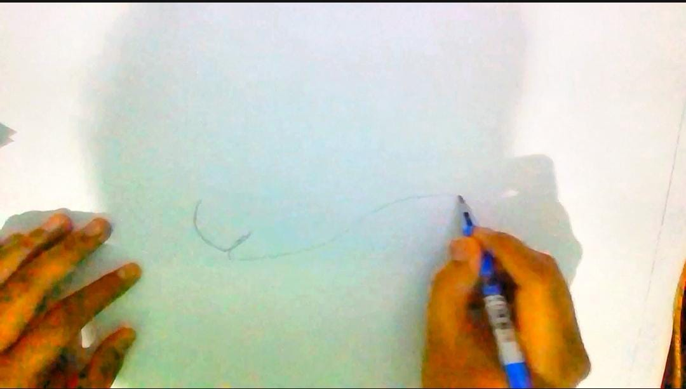
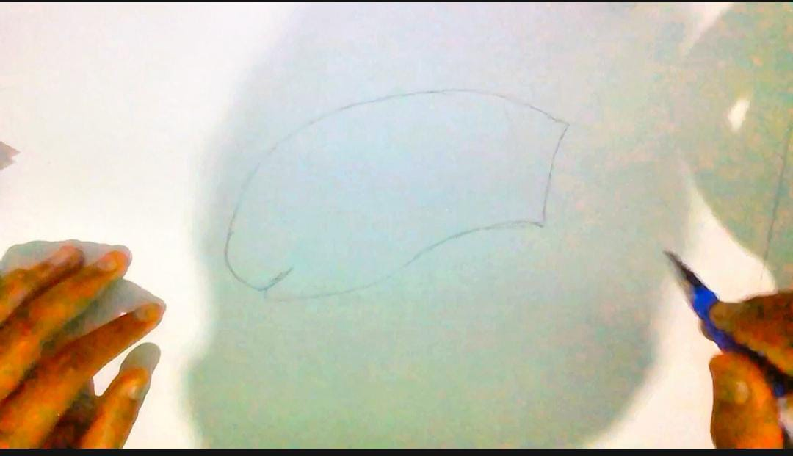
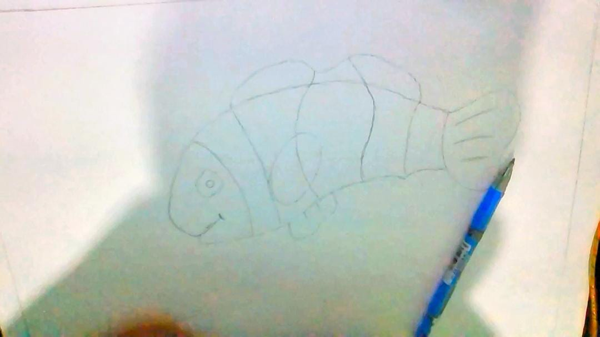
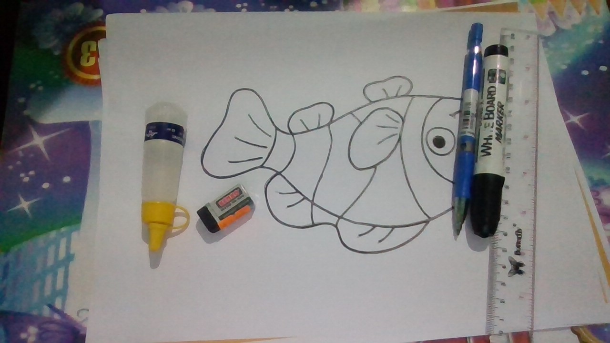
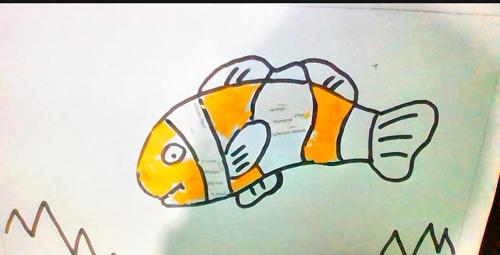
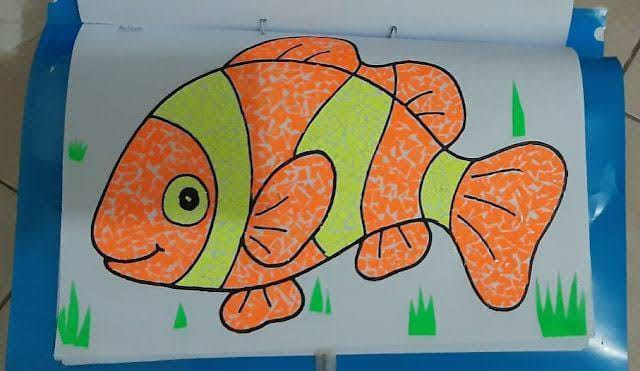

Pemanfaatan kertas bekas untuk karya seni rupa merupakan salah satu bentuk kreativitas yang ramah lingkungan. Banyak seniman memanfaatkannya untuk membuat lukisan, patung, atau karya seni lainnya. Proses ini tidak hanya mengurangi limbah kertas tetapi juga menciptakan nilai seni baru dari bahan yang sudah tidak terpakai lagi.
Pembuatan Kotak Pensil Dari Koran Bekas

Potong Koran Menjadi 4 Bagian

Linting Koran

Lem Koran Yang Sudah Di Linting

Potong Koran Yang Di Linting Menjadi 2

Lakban Kardus membentuk kotak

Tempel Potongan Koran Yang Sudah Di Siapkan Ke Kotak
Menggambar Ikan Nemo

Gamabar Outline Bagian Badan

Gambar Outline Ikan Bagian Ekor

Gamabar Outline yang Sudah Jadi

Tebalkan Garis Menggunakan Spidol Hitam

Beri Warna Pada Ikan
